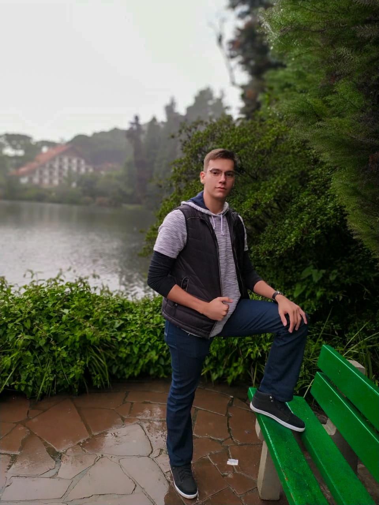

Gabriel Damiani Puccinelli

Nascido em 12/12/200 em Santa Maria-RS, Brasil. Atualmente residindo em João Pessoa-PB. O interesse em programar
surgiu por volta do ano de 2019 com a iniciação no mundo da tecnologia na Universidade Federal da Paraíba
Lista de habilidades:
- Resiliência
- Espírito de equipe
- Altamente adaptável
- Comunicativo
- Rapidez na aprendizagem
Foto